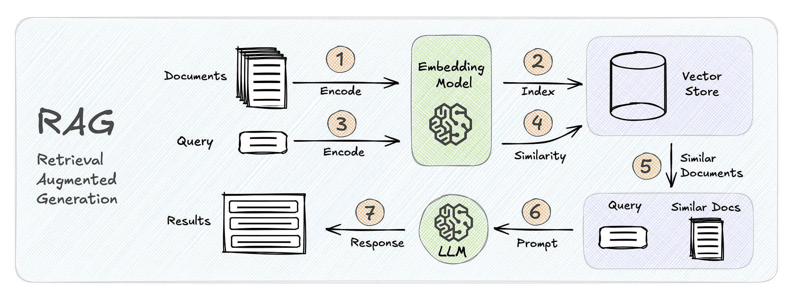
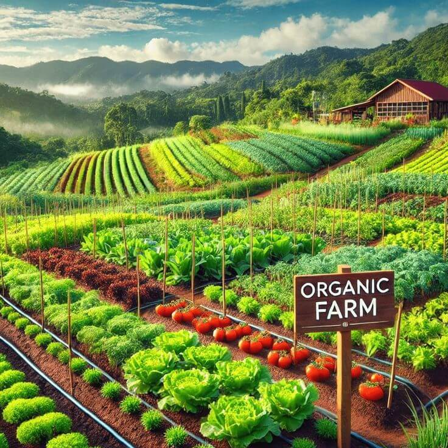
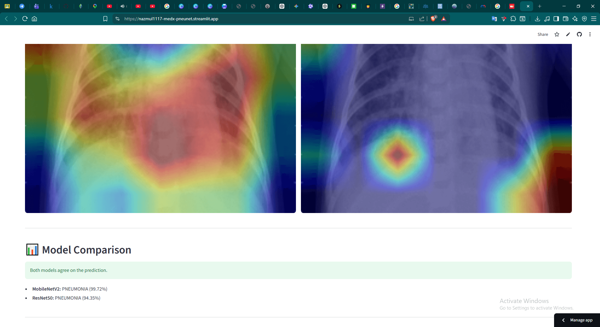
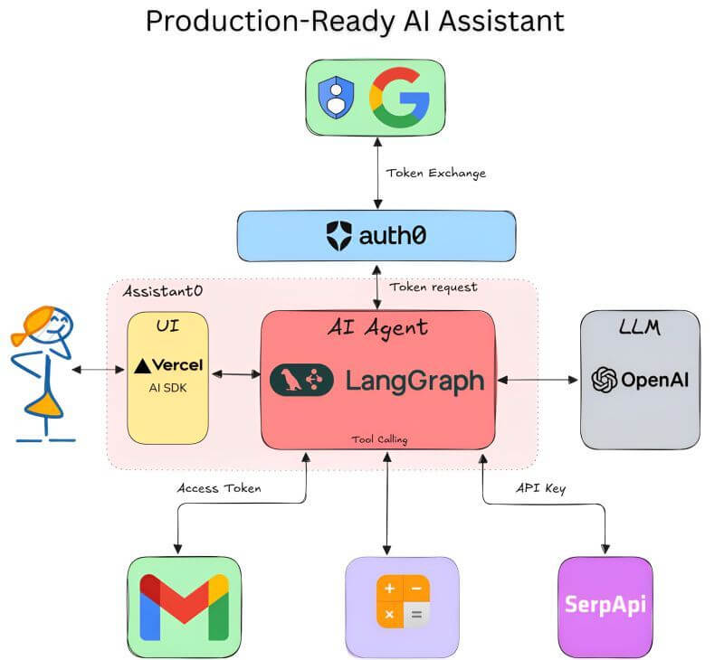
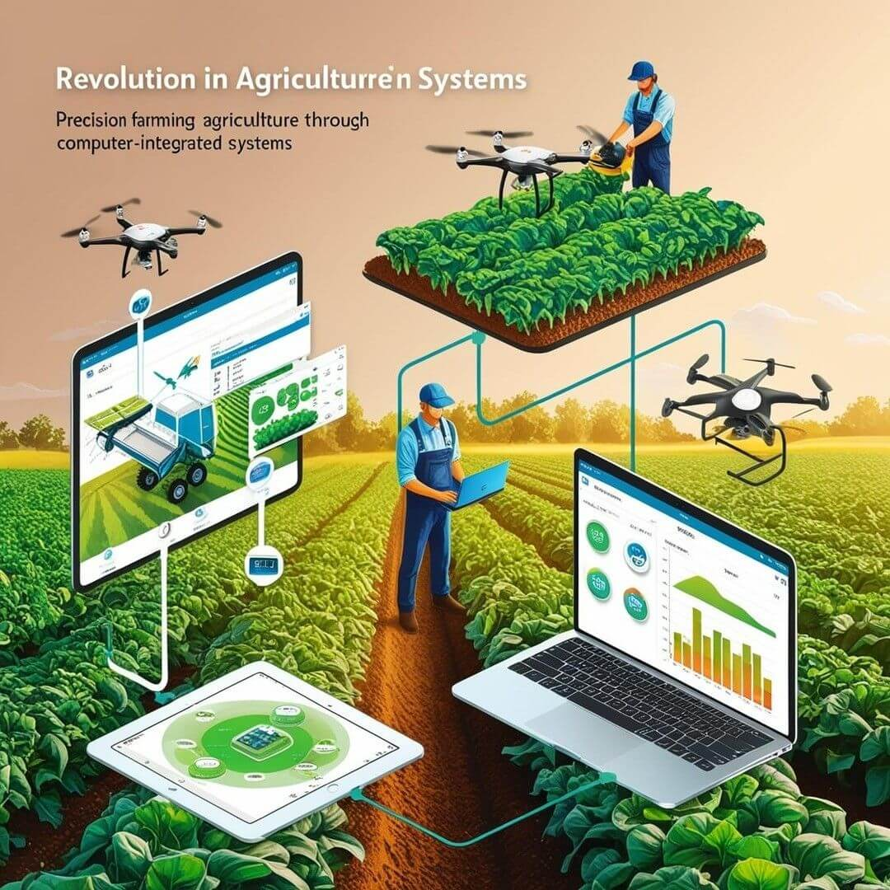

Demystifying RAG: Building Smart Context Vectors with FastAPI
A deep dive into chunking strategies, embeddings, and setting up localized vector search using ChromaDB.
Read Article
Why Every Developer Needs a Garden: Lessons in Systems Engineering
How soil moisture monitoring, light cycles, and plant ecosystems mimic scalable backends.
Read Article
Explainable AI in Healthcare: Breaking Down MedX-PneuNet
Using lightweight CNN architectures and Grad-CAM activations to make automated pneumonia diagnostics interpretable.
Read Article
Moving Beyond Chains: Multi-Agent Architectures with LangGraph
Designing stateful, multi-agent computational flows that self-correct, loop, and handle complex reasoning pipelines.
Read Article
Architecting AIS: Digital Hubs for Smallholder Farmers
Lessons learned while building real-time central hubs for pest control guides, forecasting data, and market values.
Read ArticleDeploying at the Edge: Small Models, Big Performance
A practical engineering roadmap covering post-training quantization and knowledge distillation for local edge nodes.
Read Article